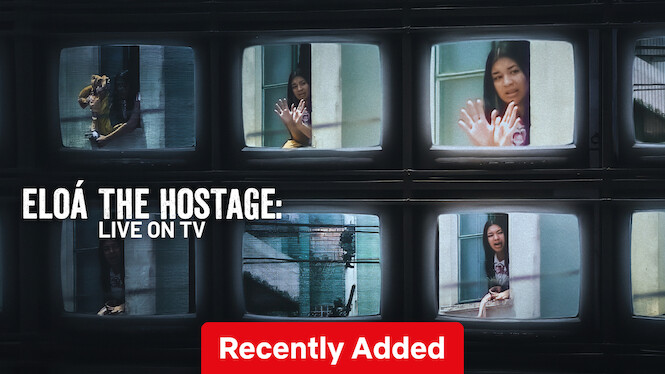

Eloá the Hostage: Live on TV
A tragic hostage case from 2008 Brazil unfolds through unseen diary entries, family interviews, and media coverage, as a 15-year-old girl is held captive by her ex-boyfriend for 100 hours while TV networks broadcast it live.
← Back to Home